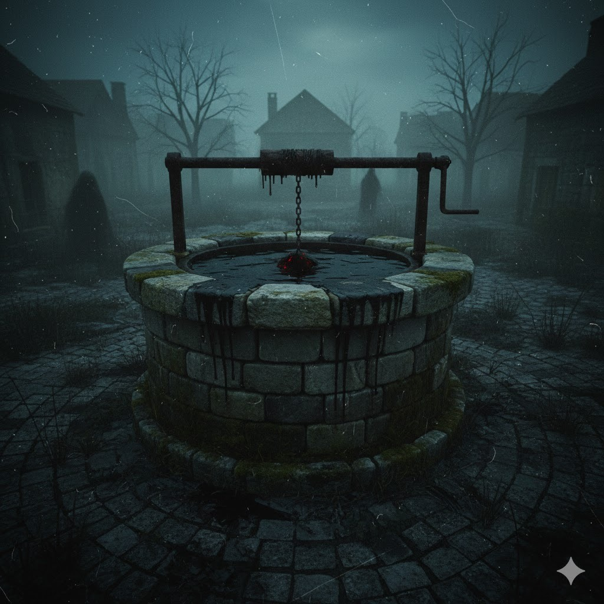

El Bebé del Pozo

En un pueblo antiguo había un pozo que nadie usaba. Una noche empezó a escucharse un llanto de bebé. Los vecinos llamaron a la policía, pero cuando bajaron una cámara no había nada.
Un joven grabó el sonido con su celular.
Cuando reprodujo el audio, el llanto se transformó en la voz de una mujer diciendo:
—Ayúdame a subir…
Pero lo decía imitando la voz de un bebé.
Al amanecer, el pozo estaba lleno de agua negra, aunque la zona llevaba meses de sequía.p>
Desde entonces nadie pasa cerca.
Dicen que ahora el llanto se escucha solo cuando alguien se queda completamente solo en la calle.